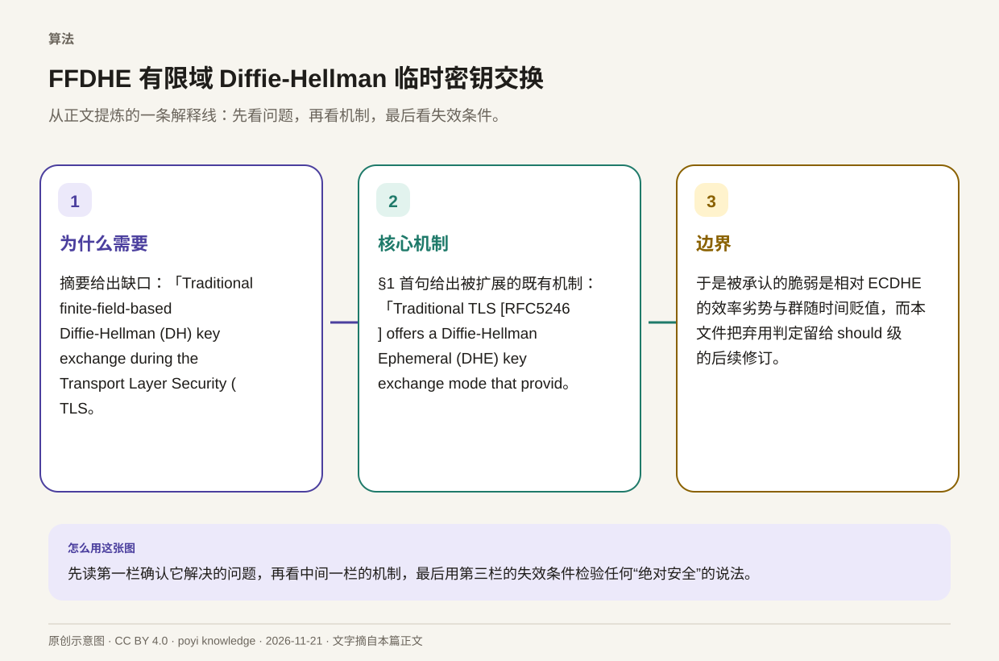
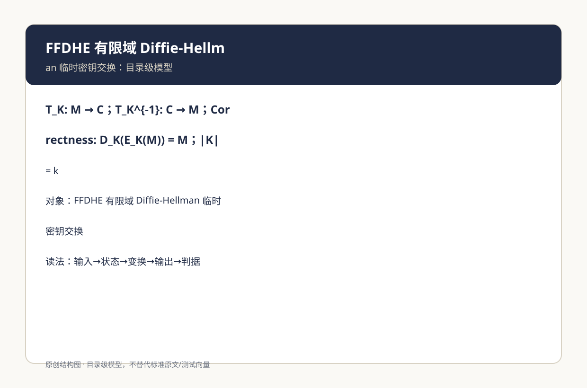

原理与机制
算法：FFDHE 有限域 DH（Finite Field Diffie-Hellman Ephemeral）。§1 首句给出被扩展的既有机制：「Traditional TLS [RFC5246] offers a Diffie-Hellman Ephemeral (DHE) key exchange mode that provides forward secrecy for the connection.」FFDHE 即在有限域上做临时 Diffie-Hellman，并为连接提供前向保密。§1.2 界定了术语归属（原文将 DHE/FFDHE 加了 ASCII 引号，此处不引那段），该条目原理据上句即可：密钥交换双方各取临时私钥，据商定的有限域群参数算出共享秘密，且该临时性带来前向保密。

为什么重要
摘要给出缺口：「Traditional finite-field-based Diffie-Hellman (DH) key exchange during the Transport Layer Security (TLS) handshake suffers from a number of security, interoperability, and efficiency shortcomings.」并把根因归到参数不清：「These shortcomings arise from lack of clarity about which DH group parameters TLS servers should offer and clients should accept.」§2 另解释所定义群的构造理由——群模数取自自然对数的底以保证中段比特无秘密可疑结构：「The goal is to guarantee that the bits in the middle of the modulus are effectively random, while avoiding any suspicion that the primes have secretly been selected to be weak according to some secret criteria.」于是本文的动机有二：把该提供/接受哪些群变成可协商的命名群，并让群参数有可核查的无特殊结构来源。
应用与实例
动作与力度分处三节，措辞层级各异。§2 的扩展发送是 MAY：「This extension MAY be sent by the client when either FFDHE or ECDHE cipher suites are listed.」§4 的服务端约束是 MUST NOT：「A TLS server MUST NOT select a named FFDHE group that was not offered by a compatible client.」§8.2 的强度考量则落在 should：「TLS implementations using FFDHE key exchange should consider the strength of the group they negotiate.」三句合起来是使用面貌：客户端可用 Supported Groups 扩展宣告其愿协商的命名 FFDHE 群，服务端只能在该列表内选定，且实现者应据所需机密性斟酌群强度。may、MUST NOT、should 在此不可互换，该条目按各自印出的力度记录。

边界与攻击面
限度有三条。§8.3 先划范围（并非弱点，而是适用面）：「Note that this document specifically targets only finite field Diffie-Hellman ephemeral key exchange mechanisms.」并给出相对短板：「Measured by computational cost to the TLS peers, ECDHE appears today to offer a much stronger key exchange mechanism than FFDHE.」——按计算代价衡量，ECDHE 目前比 FFDHE 更强。§8.4 记未来失效：「Advances in hardware or in finite field cryptanalysis may cause some of the negotiated groups to not provide the desired security margins」——硬件或密码分析进步可能使某些群不再够用，且「Revisions of this document should mark known weak groups as explicitly deprecated for use in TLS」——已知弱群应由修订版明确标记为弃用。于是被承认的脆弱是相对 ECDHE 的效率劣势与群随时间贬值，而本文件把弃用判定留给 should 级的后续修订。
历史与背景
门面板块印明身份与力度：标题行 Negotiated Finite Field Diffie-Hellman Ephemeral Parameters for Transport Layer Security (TLS)，作者行 D.Gillmor，头部印 Request for Comments: 7919、Category: Standards Track、Updates: 2246, 4346, 4492, 5246 与日期 August 2016（这些头部行复述于引号外）。其 Status of This Memo 首句为：「This is an Internet Standards Track document.」摘要末句交代更新关系：「This document updates TLS versions 1.0 (RFC 2246), 1.1 (RFC 4346), and 1.2 (RFC 5246), as well as the TLS Elliptic Curve Cryptography (ECC) extensions (RFC 4492).」两句均在 Abstract/Status 块内。据此，本文件是标准轨、并显式更新上述 TLS 与 ECC 扩展文档。
逐步示例与核验
形式模型与复算步骤
[K=g^{ab}\bmod p\quad\text{或}\quad K=[ab]G]
FFDHE 有限域 DH的公开参数、密钥/随机数与消息；变量说明：a,b 私有随机数，g 生成元，p 模数，G 椭圆曲线基点。1.双方各自生成私钥并计算公钥。2.交换公钥。3.用对方公钥与自己的私钥计算共享点。边界：公式只覆盖已登记的参数与假设；参数取值、标准版本和实现细节仍以来源为准。
参考出处
- Wikipedia search entry for FFDHE 有限域 DH. https://zh.wikipedia.org/w/index.php?search=FFDHE%20%E6%9C%89%E9%99%90%E5%9F%9F%20DH
- Handbook of Applied Cryptography (Menezes, van Oorschot, Vanstone). https://www.cacr.math.uwaterloo.ca/hac/